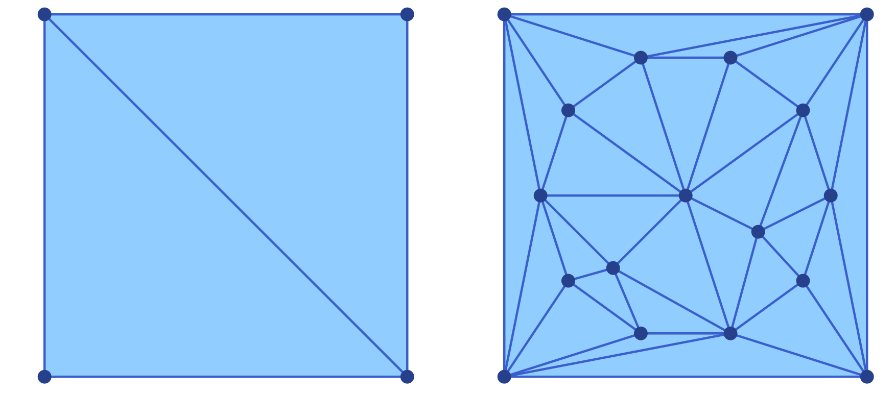
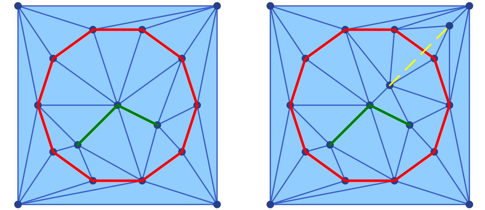
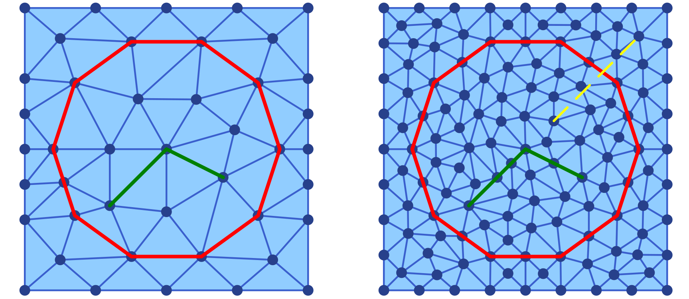
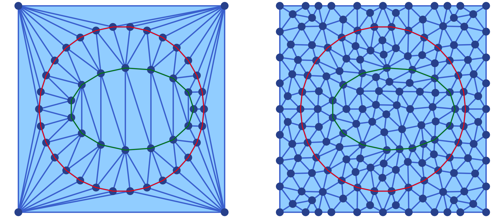
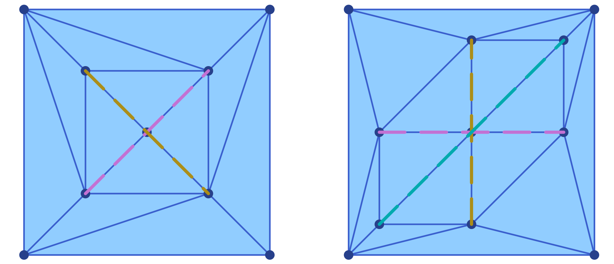

Extensions
ConleyDynamics.jl exposes optional functionality through weak dependencies — packages that are loaded on demand and extend the library's capabilities without becoming hard dependencies. This chapter documents the functions that become available through these extensions. At present, two backends are provided: DelaunayTriangulation.jl for constructing constrained planar triangulations and converting them to simplicial complexes (described in the section below), and Plots.jl for interactive visualization of Lefschetz complexes and their dynamics (described in the Visualization chapter).
DelaunayTriangulation.jl
The DelaunayTriangulation.jl package computes Delaunay triangulations of planar point sets, optionally with constrained edges and boundary curves. Loading it alongside ConleyDynamics.jl activates three functions:
delaunay_points_bnd_rectangle— initialise a point list and outer boundary for a rectangular domain,delaunay_points_add_segment— append constraint curves (closed or open) to that point list, anddelaunay_to_simplicial— convert the finished triangulation into aEuclideanComplex.
The typical workflow is to assemble the geometry with the first two functions, call triangulate (and optionally refine!) from DelaunayTriangulation.jl, and then convert the result with delaunay_to_simplicial.
Defining the Bounding Domain
delaunay_points_bnd_rectangle creates a four-vertex rectangular outer boundary. Its two arguments are vectors bmin = [xmin, ymin] and bmax = [xmax, ymax] giving the lower-left and upper-right corners. It returns a point list and a bndcurve in the format expected by the boundary_nodes keyword of triangulate:
using DelaunayTriangulation
using ConleyDynamics
points, bndcurve = delaunay_points_bnd_rectangle([-5, -5], [5, 5])
tri1 = triangulate(points; boundary_nodes = bndcurve)
sc1 = delaunay_to_simplicial(tri1)This already produces a valid EuclideanComplex — a triangulated filled rectangle without any internal constraints. It is shown in the left panel of the associated figure.

Adding Interior Nodes
A finer triangulation of the underlying rectangle can be achieved by adding interior nodes to the list of points describing the boundary. This can be achieved with the function delaunay_points_add_nodes. For example, we can add twelve interior nodes to the above square using the following commands:
newpoints = [-4 .+ 8 .* rand(2) for k in 1:12] # 12 random points
points = delaunay_points_add_nodes(points, newpoints)
tri2 = triangulate(points; boundary_nodes = bndcurve)
sc2 = delaunay_to_simplicial(tri2)This leads to the triangulation shown in the right panel of the above figure. Note that the new triangulation makes use of all new interior nodes, as well as the corners of the squares. The figure was created using the commands
using Plots
p1 = plot_simplicial(sc1)
p2 = plot_simplicial(sc2)
pcombined = plot(p1, p2, layout=(1,2))
plot!(pcombined, dpi=300)
savefig(pcombined, "delaunayext1.png")Adding Constraint Curves
In many applications it is desirable to include certain polygonal curves inside the domain as constraint curves, i.e., their edges have to be part of the created Delaunay triangulation and any of its refinements. Such constraint curves can be added to the initial mesh generation by adding the vertices of the polygons to the point list, and specifying the constraint edges in an argument segments, which has to be of type Set{Tuple{Int,Int}}.
Such constraint curves can be generated as follows. delaunay_points_add_segment appends a polygonal curve to the point list and records successive point pairs as constrained edges. A curve is passed as a Vector{Vector{<:Real}} of [x, y] coordinates. If the first and last entries coincide (within a tolerance of 1e-9), the curve is treated as closed and no duplicate endpoint is stored; otherwise it is treated as open.
The function has two calling forms. The two-argument form initialises a fresh segment set and is convenient for the first constraint curve; the three-argument form extends an existing segments::Set{Tuple{Int,Int}}:
using DelaunayTriangulation
using ConleyDynamics
points, bndcurve = delaunay_points_bnd_rectangle([-5, -5], [5, 5])
# Closed circular constraint (n+1 points with repeated first/last)
n = 10
theta = range(0, 2*pi, length = n+1)
circle = [[4.0 * cos(t), 4.0 * sin(t)] for t in theta]
# Open polygonal cut inside the domain
cut = [[-2.0, -2.0], [0.0, 0.0], [2.0, -1.0]]
points, segments = delaunay_points_add_segment(points, circle) # 2-arg form
points, segments = delaunay_points_add_segment(points, segments, cut) # 3-arg form
tri1 = triangulate(points; boundary_nodes = bndcurve, segments = segments)
sc1 = delaunay_to_simplicial(tri1)
The resulting Delaunay triangulation is shown in the left panel of the figure. In addition to the generated mesh, it also shows the two contraint curves in red and green. This plot was generated using the following commands:
using Plots
cirx = [pt[1] for pt in circle]
ciry = [pt[2] for pt in circle]
cutx = [pt[1] for pt in cut]
cuty = [pt[2] for pt in cut]
p1 = plot_simplicial(sc1)
plot!(p1, cirx, ciry, linewidth=3, color=:red)
plot!(p1, cutx, cuty, linewidth=3, color=:green)We would like to point out that adding constraint curves to a triangulation has to be done with care. More precisely, it is up to the user to ensure that the curves do not intersect each other and that each curve is without interior self-intersections. If these assumptions are not satisfied, then DelaunayTriangulation.jl will automatically remove some of the constraints. Consider for the example the following additional commands:
# Open polygonal cut inside the domain
badcut = [[1.0, 1.0], [4.0, 4.0]]
points, segments = delaunay_points_add_segment(points, segments, badcut)
tri2 = triangulate(points; boundary_nodes = bndcurve, segments = segments)
sc2 = delaunay_to_simplicial(tri2)
badx = [pt[1] for pt in badcut]
bady = [pt[2] for pt in badcut]
p2 = plot_simplicial(sc2)
plot!(p2, cirx, ciry, linewidth=3, color=:red)
plot!(p2, cutx, cuty, linewidth=3, color=:green)
plot!(p2, badx, bady, linewidth=2, color=:yellow, linestyle=:dash)
pcombined12 = plot(p1, p2, layout=(1,2))
plot!(pcombined12, dpi=300)
savefig(pcombined12, "delaunayext2.png")Clearly the added cut badcut intersects the circular constraint circle from before. The mesh generated by DelaunayTriangulation.jl is shown in the right panel of the above figure. Notice that the third constraint is not respected by the triangulation, even though the two vertices from the constraint have been added to the interior nodes.
Mesh Refinement
After triangulate, DelaunayTriangulation.jl provides the function refine! to improve the quality of the triangulation. Passing max_area as a fraction of the total domain area and min_angle in degrees is a practical starting point:
triarea1 = get_area(tri1)
refine!(tri1; max_area = 0.03 * triarea1, min_angle = 30.0)
sc3 = delaunay_to_simplicial(tri1)The refined triangulation is then converted to a EuclideanComplex in the same way as before. The optional argument min_angle has to be chosen with care. If one chooses an angle larger than 30 then it is no longer certain that an appropriate triangulation can be generated. The resulting triangulation is shown in the left panel of the next figure.

We can also refine the second mesh from above, the one with the bad constraint curve badcut:
triarea2 = get_area(tri2)
refine!(tri2; max_area = 0.007 * triarea2, min_angle = 25.0)
sc4 = delaunay_to_simplicial(tri2)The resulting triangulation is shown in the right panel of the above figure. Notice that while the nodes determining badcut are still part of the triangulation, the edge is not – just as before. The above figure was created using the following commands:
p3 = plot_simplicial(sc3)
plot!(p3, cirx, ciry, linewidth=3, color=:red)
plot!(p3, cutx, cuty, linewidth=3, color=:green)
p4 = plot_simplicial(sc4)
plot!(p4, cirx, ciry, linewidth=3, color=:red)
plot!(p4, cutx, cuty, linewidth=3, color=:green)
plot!(p4, badx, bady, linewidth=2, color=:yellow, linestyle=:dash)
pcombined34 = plot(p3, p4, layout=(1,2))
plot!(pcombined34, dpi=300)
savefig(pcombined34, "delaunayext3.png")Complete Example
The following self-contained snippet combines all three steps — bounding rectangle, two circular constraints, mesh refinement, and conversion:
using Plots
using DelaunayTriangulation
using ConleyDynamics
# Bounding box
points, bndcurve = delaunay_points_bnd_rectangle([-5, -5], [5, 5])
# Outer ring (closed, 30 segments)
n1 = 30
th1 = range(0, 2*pi, length = n1+1)
ring = [[4.0 * cos(t), 4.0 * sin(t)] for t in th1]
ringx = [pt[1] for pt in ring]
ringy = [pt[2] for pt in ring]
points, segments = delaunay_points_add_segment(points, ring)
# Inner elliptical disc (closed, 15 segments)
n2 = 15
th2 = range(0, 2*pi, length = n2+1)
disc = [[0.5 + 3.0 * cos(t), 2.0 * sin(t)] for t in th2]
discx = [pt[1] for pt in disc]
discy = [pt[2] for pt in disc]
points, segments = delaunay_points_add_segment(points, segments, disc)
# Triangulate, refine, and convert
tri = triangulate(points; boundary_nodes = bndcurve, segments = segments)
sc1 = delaunay_to_simplicial(tri)
triarea = get_area(tri)
refine!(tri; max_area = 0.005 * triarea, min_angle = 27.0)
sc2 = delaunay_to_simplicial(tri)
# Plot the triangulations
p1 = plot_simplicial(sc1)
plot!(p1, ringx, ringy, color=:red)
plot!(p1, discx, discy, color=:green)
p2 = plot_simplicial(sc2)
plot!(p2, ringx, ringy, color=:red)
plot!(p2, discx, discy, color=:green)
pcombined = plot(p1, p2, layout=(1,2))
plot!(pcombined, dpi=300)
savefig(pcombined, "delaunayext4.png")The resulting Delaunay triangulations are shown in the next figure.

Adding Intersecting Constraint Segments
As noted above, delaunay_points_add_segment requires the caller to ensure that constraint curves do not intersect each other. When this condition cannot be guaranteed – for example when the curves are computed programmatically and may share crossings or collinear overlaps – delaunay_points_add_split_segs provides a safe alternative.
Internally it calls split_segments, which computes the planar straight-line arrangement of the given segments: All crossings and collinear overlaps are resolved and the input segments are split at every intersection point, yielding a non-crossing set of sub-segments. These vertices and sub-segments are then appended to the existing point list and constraint-edge set exactly as delaunay_points_add_segment would.
The function signature mirrors that of delaunay_points_add_segment: The two-argument form initialises a fresh segment set, and the three-argument form extends an existing one. An optional keyword argument verbose=true prints a brief summary of the splitting process.
When calling the three-argument form, split_segments resolves crossings and overlaps within newsegments only. No check is performed for intersections or overlaps between the newly added sub-segments and the segments already present in segments. It is the caller's responsibility to ensure that the two sets are compatible. Incorrect use can produce an invalid constraint-edge set that silently causes DelaunayTriangulation.jl to drop constraints. Only use the three-argument form if you know that the new segments do not intersect the existing ones.
The basic usage of delaunay_points_add_segment is illustrated in the following code segment:
using DelaunayTriangulation
using ConleyDynamics
points1, bndcurve1 = delaunay_points_bnd_rectangle([-2, -2], [2, 2])
# Two crossing diagonals - they would violate the no-intersection requirement
# of delaunay_points_add_segment, but split_segments resolves the crossing.
segs1 = [[[-1.0, -1.0], [1.0, 1.0]],
[[-1.0, 1.0], [1.0, -1.0]]]
points1, segments1 = delaunay_points_add_split_segs(points1, segs1; verbose=true)
# Output:
# split_segments: 2 input segment(s)
# intersection points created : 1
# output vertices : 5
# output edges : 4
tri1 = triangulate(points1; boundary_nodes = bndcurve1, segments = segments1)
sc1 = delaunay_to_simplicial(tri1)
The resulting triangulation is shown in the left panel of the figure. The five vertices (four original endpoints plus the crossing at the origin) and the four sub-segments are all included as constraints in the triangulation. The result is a valid EuclideanComplex whose constraint edges are respected by the mesh.
The following more complex example with three mutually intersecting segments demonstrates that the function delaunay_points_add_split_segs also handles multiple simultaneous crossings correctly:
using DelaunayTriangulation
using ConleyDynamics
points2, bndcurve2 = delaunay_points_bnd_rectangle([-4, -4], [4, 4])
# Three segments that all cross each other
segs2 = [[[-3.0, 0.0], [3.0, 0.0]], # horizontal
[[ 0.0, -3.0], [0.0, 3.0]], # vertical
[[-3.0, -3.0], [3.0, 3.0]]] # diagonal
points2, segments2 = delaunay_points_add_split_segs(points2, segs2; verbose=true)
# Output:
# split_segments: 3 input segment(s)
# intersection points created : 3
# output vertices : 9
# output edges : 6
tri2 = triangulate(points2; boundary_nodes = bndcurve2, segments = segments2)
sc2 = delaunay_to_simplicial(tri2)For the produced triangulation, see the right panel of the above figure. The three intersection points (origin, and the two axis crossings with the diagonal) are automatically detected, and each input segment is split into two sub-segments at its crossings. The figure was created using the following commands:
using Plots
p1 = plot_simplicial(sc1)
for p1seg in segs1
pt1, pt2 = p1seg
plot!(p1, [pt1[1],pt2[1]], [pt1[2],pt2[2]], linewidth=3, linestyle=:dash)
end
p2 = plot_simplicial(sc2)
for p2seg in segs2
pt1, pt2 = p2seg
plot!(p2, [pt1[1],pt2[1]], [pt1[2],pt2[2]], linewidth=3, linestyle=:dash)
end
pcombined = plot(p1, p2, layout=(1,2))
plot!(pcombined, dpi=300)
savefig(pcombined, "delaunayext5.png")